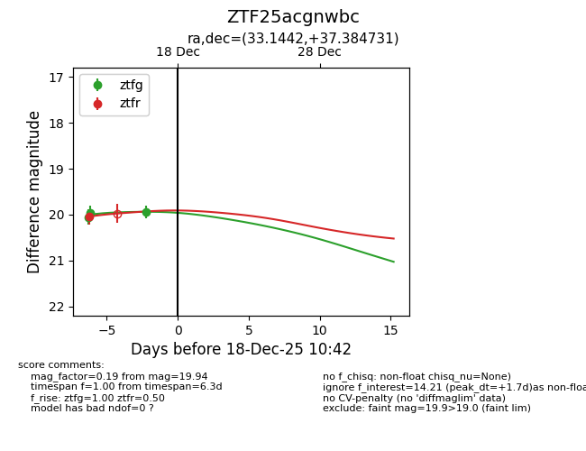
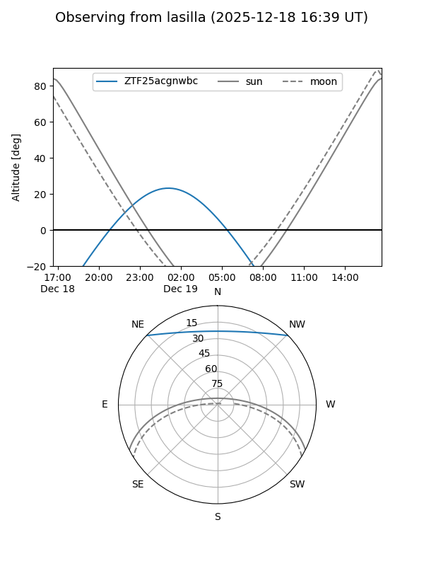
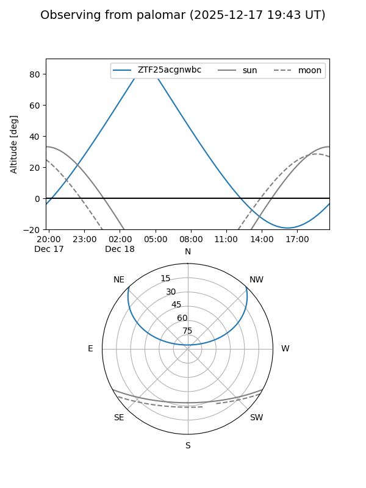

ZTF25acgnwbc
Target ZTF25acgnwbc at 2025-12-18 12:17
Aliases and brokers:
FINK: fink-portal.org/ZTF25acgnwbc
Lasair: lasair-ztf.lsst.ac.uk/objects/ZTF25acgnwbc
ALeRCE: alerce.online/object/ZTF25acgnwbc
alt names
ZTF25acgnwbc (ztf,fink_ztf)
Coordinates:
equatorial (ra, dec) = 33.1442,+37.38473
equatorial (HMS+DMS) = 02:12:34.62,+37:23:05.03
galactic (l, b) = (140.3098,-22.73373)
Photometry
last ztfg=19.94, ztfr=19.85
5 ztfg, 2 ztfr detections
Lightcurve

Visibility


Additional plots